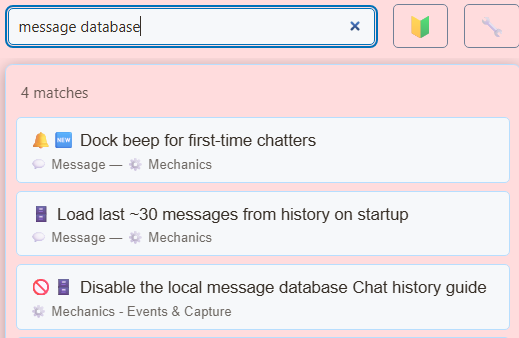

本地消息数据库的作用
SSN 将捕获的消息保存到执行捕获的浏览器或桌面安装环境中的数据库。聊天历史记录页面使用该数据库查询之前的消息。


此 禁用本地消息数据库 设置会停止保存新消息。实时捕获和 dock 显示可能仍在运行，因此在 dock 中看到消息并不能证明历史记录正在保存。
首次发言者检测以及基于历史记录的观众识别也依赖本地数据库。
保持忠诚度积分正常运行
积分获取以及以下命令的处理： !points, !leaderboard 和 !rewards 会在保存捕获的消息时执行。禁用本地消息数据库会停止这些处理，即使积分开关已开启也一样。
- 找到 禁用本地消息数据库 并保持关闭，可在 SSN 设置中找到此选项。
- 在 积分系统中启用忠诚度积分和所需的聊天命令。
- 请一位观众先发送一条消息，然后发送
!points。请检查对应平台上的账户。
积分余额与消息历史记录分开保存。请使用 积分系统 → 备份与恢复 → 导出积分 进行备份。与其他安装环境共用会话 ID 不会同步这两个数据库中的任何一个。
请参阅 忠诚度积分指南 ，了解积分获取、排名、奖励和备份。
如何使用已有历史记录
当积分账本为空且尚未初始化或重置时，SSN 可以根据已保存的聊天历史记录计算初始积分。此操作只执行一次，用于初始化余额。
历史互动采用与直播时相同的积分规则：首次符合条件的互动获得基础积分，后续互动可能获得连续参与奖励。只能计入现有的消息历史记录；迁移或恢复安装环境时，请保留积分导出文件。